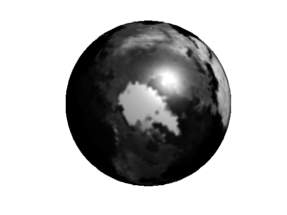
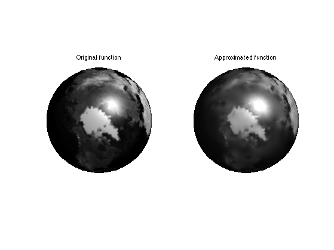
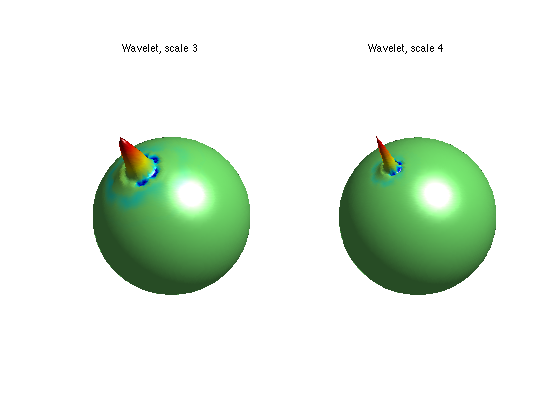
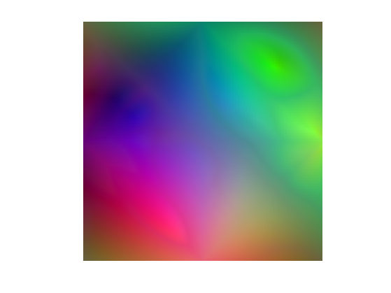
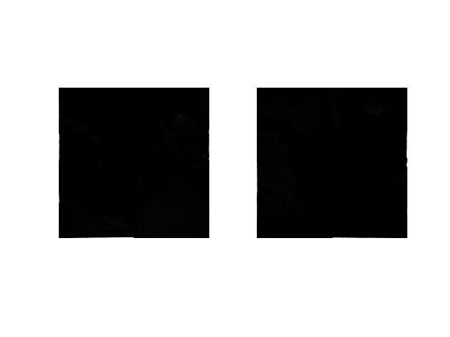
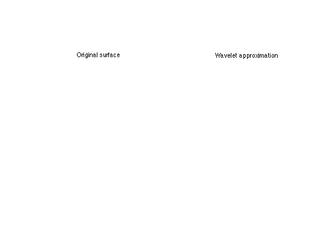

Wavelet Transform on 3D Meshes
This tour explores multiscale computation on 3D meshes using the lifting wavelet transform.
Contents
Installing toolboxes and setting up the path.
You need to download the following files: signal toolbox, general toolbox, graph toolbox and wavelet_meshes toolbox.
You need to unzip these toolboxes in your working directory, so that you have toolbox_signal, toolbox_general, toolbox_graph and toolbox_wavelet_meshes in your directory.
For Scilab user: you must replace the Matlab comment '%' by its Scilab counterpart '//'.
Recommandation: You should create a text file named for instance numericaltour.sce (in Scilab) or numericaltour.m (in Matlab) to write all the Scilab/Matlab command you want to execute. Then, simply run exec('numericaltour.sce'); (in Scilab) or numericaltour; (in Matlab) to run the commands.
Execute this line only if you are using Matlab.
getd = @(p)path(p,path); % scilab users must *not* execute this
Then you can add the toolboxes to the path.
getd('toolbox_signal/'); getd('toolbox_general/'); getd('toolbox_graph/'); getd('toolbox_wavelet_meshes/');
Functions Defined on Surfaces
One can define a function on a discrete 3D mesh that assigns a value to each vertex. One can then perform processing of the function according to the geometry of the surface. Here we use a simple sphere.
First compute a multiresolution sphere.
options.base_mesh = 'ico';
options.relaxation = 1;
options.keep_subdivision = 1;
J = 6;
[vertex,face] = compute_semiregular_sphere(J,options);
Options for the display.
options.use_color = 1;
options.rho = .3;
options.color = 'rescale';
options.use_elevation = 0;
Then define a function on the sphere. Here the function is loaded from an image of the earth.
f = load_spherical_function('earth', vertex{end}, options);
Display the function.
clf;
plot_spherical_function(vertex,face,f, options);
colormap gray(256);
 Wavelet Transform of Functions Defined on Surfaces
A wavelet transform can be used to compress a function defined on a surface. Here we take the example of a 3D sphere. The wavelet transform is implemented with the Lifting Scheme of Sweldens, extended to triangulated meshes by Sweldens and Schroder in a SIGGRAPH 1995 paper.
Perform the wavelet transform.
fw = perform_wavelet_mesh_transform(vertex,face, f, +1, options);
Threshold (remove) most of the coefficient.
r = .1;
fwT = perform_thresholding( fw, round(r*length(fw)), 'largest' );
Backward transform.
f1 = perform_wavelet_mesh_transform(vertex,face, fwT, -1, options);
Display it.
clf; subplot(1,2,1); plot_spherical_function(vertex,face,f, options); title('Original function'); subplot(1,2,2); plot_spherical_function(vertex,face,f1, options); title('Approximated function'); colormap gray(256);
Exercice 1: (check the solution) Plot the approximation curve error as a function of the number of coefficient.
exo1;
Exercice 2: (check the solution) Perform denoising of spherical function by thresholding. Study the evolution of the optimal threshold as a function of the noise level.
exo2;
Exercice 3: (check the solution) Display a dual wavelet that is used for the reconstruction by taking the inverse transform of a dirac.
exo3;
Spherical Geometry Images
A simple way to store a mesh is using a geometry images. This will be usefull to create a semi-regular mesh.
Firs we load a geometry image, which is a (n,n,3) array M where each M(:,:,i) encode a X,Y or Z component of the surface. The concept of geometry images was introduced by Hoppe and collaborators.
name = 'bunny'; M = read_gim([name '-sph.gim']); n = size(M,1);
A geometry image can be displayed as a color image.
clf; imageplot(M);
But it can be displayed as a surface. The red curves are the seams in the surface to map it onto a sphere.
clf; plot_geometry_image(M, 1,1); view(20,88);

One can compute the normal to the surface, which is the cross product of the tangent.
Compute the tangents.
options.order = 2; u = zeros(n,n,3); v = zeros(n,n,3); for i=1:3 [u(:,:,i),v(:,:,i)] = grad(M(:,:,i), options); end
Compute normal.
v = cat(3, u(:,:,2).*v(:,:,3)-u(:,:,3).*v(:,:,2), ... u(:,:,3).*v(:,:,1)-u(:,:,1).*v(:,:,3), ... u(:,:,1).*v(:,:,2)-u(:,:,2).*v(:,:,1) );
Compute lighting with an inner product with the lighting vector.
L = [1 2 -1]; L = reshape(L/norm(L), [1 1 3]); A1 = max( sum( v .* repmat(L, [n n]), 3 ), 0 ); L = [-1 -2 -1]; L = reshape(L/norm(L), [1 1 3]); A2 = max( sum( v .* repmat(L, [n n]), 3 ), 0 );
Display.
clf; imageplot(A1, '', 1,2,1); imageplot(A2, '', 1,2,2);
Semi-regular Meshes
To be able to perform computation on arbitrary mesh, this surface mesh should be represented as a semi-regular mesh, which is obtained by regular 1:4 subdivision of a base mesh.
Create the semi regular mesh from the Spherical GIM.
J = 6; [vertex,face,vertex0] = compute_semiregular_gim(M,J,options);
Options for display.
options.func = 'mesh';
options.name = name;
options.use_elevation = 0;
options.use_color = 0;
We can display the semi-regular mesh.
selj = J-3:J; clf; for j=1:length(selj) subplot(2,2,j); plot_mesh(vertex{selj(j)},face{selj(j)}, options); shading('faceted'); lighting('flat'); axis tight; % title(['Subdivision level ' num2str(selj(j))]); end colormap gray(256);
Wavelet Transform of a Surface
A wavelet transform can be used to compress a suface itself. The surface is viewed as a 3 independent functions (X,Y,Z coordinates) and there are three wavelet coefficients per vertex of the mesh.
The function to process, the positions of the vertices.
f = vertex{end}';
Forward wavelet tranform.
fw = perform_wavelet_mesh_transform(vertex,face, f, +1, options);
Threshold (remove) most of the coefficient.
r = .1;
fwT = perform_thresholding( fw, round(r*length(fw)), 'largest' );
Backward transform.
f1 = perform_wavelet_mesh_transform(vertex,face, fwT, -1, options);
Display the approximated surface.
clf;
subplot(1,2,1);
plot_mesh(f,face{end},options); shading('interp'); axis('tight');
title('Original surface');
subplot(1,2,2);
plot_mesh(f1,face{end},options); shading('interp'); axis('tight');
title('Wavelet approximation');
